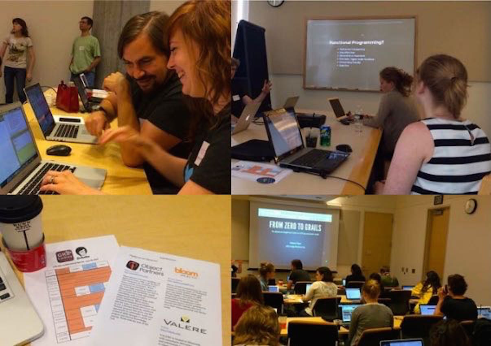

Gr8Workshops: A GUIDED DISCUSSION ABOUT TEACHING AND DIVERSITY IN THE GROOVY COMMUNITY
Moderated by @jennstrater | Co-Founder | Gr8Ladies

These slides are up on GitHub jlstrater.github.io/gr8workshops-discussion

- An organization for the support of women in the Gr8 (Groovy, Grails, Gradle, etc) community
- Education
- Professional Development
- Networking
- Retention
- Chapters in Minneapolis, MN and looking to expand
Gr8Workshops
- Free or low-cost weekend courses
- Audience
- Beginners
- Experienced developers
- Volunteers
Goals of this session
- Evaluate current teaching models
- Raise questions about how programming is taught and the phrase "skills shortage"1
- Discuss the role of diversity in the community and in education
- Navigate solutions
Backgrounds
How did you first learn to program?
- Traditional University (major in Computer Science, IT, or related)
- Other University major and on-the-job training
- Two-year technical, vocational, or community college
- Online University
- Code School/Bootcamp

How did you first learn Groovy?
- University
- On the job
- Books, blog posts, other media
- Workshop, conference, or other training
The problems
- "Skills shortage"
- Lack of Diversity
"Skills Shortage" Solutions
- Traditional
- Immigration
- Outsourcing
- Proposed
- Employer paid skills training
- Hire new grads and offer training
What is diversity?
Diversity Exercise

I am _____,______,______,______,_____
- Traits
- Physical (tall, short, blond hair, brown eyes)
- Personality (smart, funny, extroverted, loyal, dedicated)
- Gender Identity(male, female, bigender, genderqueer, etc)
- Race, ethnicity, heritage, country
- Profession
- Education
- Socioeconomic status/background
The importance of diversity in the workplace and education is about embracing the value that comes from our individual differences and perspectives
Tackling Diversity in Education
- Don't just make it pink!
- Consider scholarships
- Consider childcare for parents
- Avoid using gendered pronouns and adjectives
- Be cautious of diversity in images in marketing
What can we do?

Potential Students

- University students
- Working professionals looking for a career change
- Experienced developers looking to learn new skills
- Parents, caregivers, etc returning to the workforce after an extended leave
Alternative Models of education

Code Schools

|
|
Weekend Code Camps
- Language/Stack focused learning at various experience levels
- Free or low cost
- Examples
- Bridge Foundry(RailsBridge, ClojureBridge)6
- RailsGirls
- DjangoGirls
- Gr8Workshops
Online
- Types
- Traditional Universities for Credit
- All online Universities
- One-time classes for no credit2,3
- Formats
- Group lessons
- Self-paced
Self-Paced Online Class Examples
- Code Academy
- Aimed learning objectives
- Beginner level only
- Project Euler
- Good for trying out new languages
- Very math centric
- Khan Academy
- Beginner programming courses
- Many other subjects too
Experiences
Summary
- There are MANY different ways to learn programming
- Every individual learns differently so multiple options are better and necessary
Do you think you would have benefited from another format for learning Groovy?
Does Groovy have potential as a language for beginners?
What content should be included when teaching Groovy?
- Syntax
- Frameworks
- Testing
- Specific Plugins
- IDEs
What teaching styles work best for learning/teaching Groovy?
- Examples vs projects
- Self guided vs group settings
For experienced teachers, what is your typical audience?
Is that what you expect?
Lessons learned from Gr8Ladies Gr8Workshops
Identify the audience

- Experience Level
- No programming experience
- Introductory course experience
- Experienced developers looking to learn something new
- Goal of education
- Job specific skills
- Theoretical knowledge
- Career change
Assess Technical Background Knowledge
- Basic Web Skills
- Html, CSS, JavaScript
- Tools
- Source control, Command line, Integrated Development Environment(IDE)
- General Programming Concepts
- Object Oriented Programming (OOP)
- Functional programming
- REST/APIs
- Define all jargon and acronyms
- Simplify exercises
- avoid industry specific examples (even math)
 Setting Up a Development Environment
Setting Up a Development Environment
- Provide instructions for multiple machine configurations
- Assume students don't know how any programs(IDE's etc) work
- Offer supervised time to assist with setup
- Pick a location for your event with good Wi-Fi
- Bring a backup USB drive with all necessary setup files
- If all else fails, try a web console
Beginner Specific Hurdles

- Learning something new can be intimidating
- Remember a welcoming attitude
- Watch for assumptions and tone of voice
- The more TA(teaching assistant)s the better
- Small student to teacher ratios are important
- Multiple viewpoints
- Different analogies and explanations
- Languages
- Java is practical, but beginners often get frustrated with the syntax
- Groovy is dynamic, flexible, and easier to learn!
Current and Ongoing Challenges
- Wait for everyone to catch up or keep moving on?
- Budget enough time for questions and assistance
- One hour sessions aren't enough for true beginners
- Consider a follow-up session if there are still outstanding questions
- Consider offering an intermediate level for repeat students who don't quite have enough experience for the advanced class
References
- 1http://www.itworldcanada.com/article/it-hiring-slump-to-bring-about-skills-shortage-survey/88069
- 2http://www.newyorker.com/science/maria-konnikova/moocs-failure-solutions
- 3http://www.academicpartnerships.com/sites/default/files/MOOCs_Expectations_and_Reality.pdf
- 4http://flatironschool.com
- 5http://hackerschool.com/faq
- 6http://www.railsbridge.org